전기공사기사 (2016-03-06 기출문제)
1과목: 전기응용 및 공사재료
1. 전압을 일정하게 유지하기 위한 전압 제어소자로 널리 이용되는 다이오드는?
- 터널 다이오드(tunnel diode)
- 제너 다이오드(zener diode)
- 바랙터 다이오드(varactor diode)
- 쇼트키 다이오드(schottky diode)
(정답률: 85%)

2. 열전도율의 단위를 나타낸 것은?
- kcal/h
- mㆍhㆍ℃/kcal
- kcal/kgㆍ℃
- kcal/mㆍhㆍ℃
(정답률: 67%)
3. 다음 전동기 중에서 속도 변동률이 가장 큰 것은?
- 3상 동기 전동기
- 단상 유도 전동기
- 3상 농형 유도 전동기
- 3상 권선형 유도 전동기
(정답률: 75%)
4. 금속의 전해정제로 틀린 것은?
- 전력소비가 적다.
- 순도가 높은 금속이 석출된다.
- 금속을 음극으로 하고 순금속을 양극으로 한다.
- 동(Cu)의 전해정제는 H2SO4와 CuSO4의 혼합용액을 전해액으로 사용한다.
(정답률: 69%)
5. 루소선도에서 하반구 광속[lm]은 약 얼마인가? (단, 그림에서 곡선 BC는 4분원이다.)
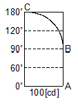
- 528
- 628
- 728
- 828
(정답률: 83%)
6. 전기가열방식 중에서 고주파 유전가열의 응용으로 틀린 것은?
- 목재의 건조
- 비닐막 접착
- 목재의 접착
- 공구의 표면처리
(정답률: 82%)
7. 정격전압 220[V], 100[W]의 전구를 점등한 방의 조도가 120[lx]이다. 이 부하에 전압을 218[V]가 인가하면 이 방의 조도는 약 몇 [lx]인가? (단, 여기서 광속의 전압 지수는 3.6으로 한다.)
- 119
- 118
- 116
- 124
(정답률: 58%)
8. 2종의 금속이나 반도체를 접합하여 열전대를 만들고 기전력을 공급하면 각 접점에서 열의 흡수, 발생이 일어나는 현상은?
- 핀치(Pinch) 효과
- 제벡(Seebeck) 효과
- 펠티에(Peltier) 효과
- 톰슨(Thomson) 효과
(정답률: 78%)
9. 전기차의 속도제어시스템 중 주파수의 변화에 대응하도록 전압도 같이 제어하는 방법은?
- 저항 제어시스템
- 초퍼 제어시스템
- 위상 제어시스템
- VVVF 제어시스템
(정답률: 89%)
10. 직류 전동기의 속도제어법에서 정출력 제어에 속하는 것은?
- 계자 제어법
- 전압 제어법
- 전기자 저항 제어법
- 워드레오나드 제어법
(정답률: 74%)
11. 대전력 정류용으로 사용되는 SCR의 특징이 아닌 것은?
- 열용량이 커서 고온에 강하다.
- 역률각 이하에서는 제어가 되지 않는다.
- 아크가 생기지 않으므로 열의 발생이 적다.
- 전류가 흐르고 있을 때 양극의 전압강하가 작다.
(정답률: 59%)
12. 전선 접속시 유의사항이 아닌 것은?
- 접속으로 인해 전기적 저항이 증가하지 않게 한다.
- 접속으로 인한 도체 단면적을 현저히 감소시키게 한다.
- 접속부분의 전선의 강도를 20[%] 이상 감소시키지 않게 한다.
- 접속부분은 절연전선의 절연물과 동등 이상의 절연내력이 있는 것으로 충분히 피복한다.
(정답률: 81%)
13. 전원을 넣자마자 곧바로 점등되는 형광등용의 안정기는?
- 점등관식
- 래피드스타트식
- 글로우스타트식
- 필라멘트 단락식
(정답률: 85%)
14. 전선을 지지하기 위하여 사용되는 자재로 애자를 부착하여 사용하며 단면이 □형으로 생긴 형강은?
- 경완철
- 분기고리
- 행거밴드
- 인류스트랍
(정답률: 78%)
15. 철탑의 상부구조에서 사용되는 것이 아닌 것은?
- 암(arm)
- 수평재
- 보조재
- 주각재
(정답률: 71%)
16. 특고압 배전선로 보호용 기기로 자동 재폐로가 가능한 기기는?
- ASS
- ALTS
- ASBS
- Recloser
(정답률: 71%)
17. 공기 중의 산소를 전지의 감극제로 사용하는 건전지는?
- 표준전지
- 일반 건전지
- 내한 건전지
- 공기 습전지
(정답률: 85%)
18. 배전선로의 지지물로 가장 많이 쓰이고 있는 것은?
- 철탑
- 강판주
- 강관 전주
- 철근 콘크리트 전주
(정답률: 85%)
19. 도전 재료로서 요구되는 조건이 틀린 것은?
- 전기 저항이 클 것
- 내식성 등이 우수할 것
- 접촉과 연결이 비교적 쉬울 것
- 자원이 풍부하여 얻기 쉽고 가격이 저렴할 것
(정답률: 86%)
20. 납축전지에 대한 설명 중 틀린 것은?
- 충전시 음극 : PbSO4 → Pb
- 방전시 음극 : Pb → PbSO4
- 충전시 양극 : PbSO4 → PbO
- 방전시 양극 : PbO2 → PbSO4
(정답률: 69%)
2과목: 전력공학
21. 150[kVA] 단상변압기 3대를 △-△ 결선으로 사용하다가 1대의 고장으로 V-V결선하여 사용하면 약 몇 [kVA] 부하까지 걸 수 있겠는가?
- 200
- 220
- 240
- 260
(정답률: 33%)
22. 송전계통의 안정도를 증진시키는 방법이 아닌 것은?
- 전압변동를 적게 한다.
- 제동저항기를 설치한다.
- 직렬리액턴스를 크게 한다.
- 중간조상기방식을 채용한다.
(정답률: 31%)
23. 연간 전력량이 E[kWh]이고, 연간 최대전력이 W[kW]인 연부하율은 몇 [%]인가?
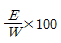
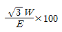
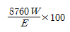
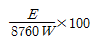
(정답률: 27%)
24. 차단기의 정격차단시간은?
- 고장 발생부터 소호까지의 시간
- 가동접촉자 시동부터 소호까지의 시간
- 트립코일 여자부터 소호까지의 시간
- 가동접촉자 개구부터 소호까지의 시간
(정답률: 31%)
25. 3상 결선 변압기의 단상 운전에 의한 소손방지 목적으로 설치하는 계전기는?
- 단락 계전기
- 결상 계전기
- 지락 계전기
- 과전압 계전기
(정답률: 26%)
26. 인터록(interlock)의 기능에 대한 설명으로 맞는 것은?
- 조작자의 의중에 따라 개폐되어야 한다.
- 차단기가 열려 있어야 단로기를 닫을 수 있다.
- 차단기가 닫혀 있어야 단로기를 닫을 수 있다.
- 차단기와 단로기를 별도로 닫고, 열 수 있어야 한다.
(정답률: 32%)
27. 그림과 같은 22[kV] 3상 3선식 전선로의 P점에 단락이 발생하였다면 3상 단락전류는 약 몇 [A]인가? (단, %리액턴스는 8[%]이며 저항분은 무시한다.)
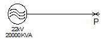
- 6561
- 8560
- 11364
- 12684
(정답률: 24%)
28. 전력계통에서 내부 이상전압의 크기가 가장 큰 경우는?
- 유도성 소전류 차단시
- 수차발전기의 부하 차단시
- 무부하 선로 충전전류 차단시
- 송전선로의 부하 차단기 투입시
(정답률: 28%)
29. 화력 발전소에서 재열기의 목적은?
- 급수예열
- 석탄건조
- 공기예열
- 증기가열
(정답률: 28%)
30. 송전선로의 각 상전압이 평형되어 있을 때 3상 1회선 송전선의 작용정전용량[㎌/km]을 옳게 나타낸 것은? (단, r은 도체의 반지름[m] D는 도체의 등가선간거리[m]이다.)
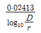
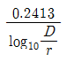
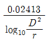
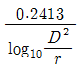
(정답률: 30%)
31. 플리커 경감을 위한 전력 공급측의 방안이 아닌 것은?
- 공급전압을 낮춘다.
- 전용 변압기로 공급한다.
- 단독 공급 계통을 구성한다.
- 단락용량이 큰 계통에서 공급한다.
(정답률: 27%)
32. 송전선로에서 송전전력, 거리, 전력손실율과 전선의 밀도가 일정하다고 할 때, 전선 단면적 A[mm2]는 전압 V[V]와 어떤 관계에 있는가?
- V에 비례한다.
- V2에 비례한다.
- 1/V에 비례한다.
- 1/V2에 비례한다.
(정답률: 26%)
33. 동기조상기에 관한 설명으로 틀린 것은?
- 동기전동기의 V특성을 이용하는 설비이다.
- 동기전동기를 부족여자로 하여 컨덕턴스로 사용한다.
- 동기전동기를 과여자로 하여 콘덴서로 사용한다.
- 송전계통의 전압을 일정하게 유지하기 위한 설비이다.
(정답률: 27%)
34. 비등수형 원자로의 특색이 아닌 것은?
- 열교환기가 필요하다.
- 기포에 의한 자기 제어성이 있다.
- 방사능 때문에 증기는 완전히 기수분리를 해야 한다.
- 순환펌프로서는 급수펌프뿐이므로 펌프동력이 작다.
(정답률: 25%)
35. 그림과 같은 단거리 배전선로의 송전단 전압 6600[V], 역률은 0.9이고, 수전단 전압 6100[V], 역률 0.8 일 때 회로에 흐르는 전류 I[A]는? (단, Es 및 ET은 송ㆍ수전단 대지전압이며, r=20[Ω], x=10[Ω]이다.)
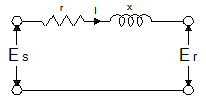
- 20
- 35
- 53
- 65
(정답률: 21%)
36. 피뢰기의 제한전압이란?
- 충격파의 방전개시전압
- 상용주파수의 방전개시전압
- 전류가 흐르고 있을 때의 단자전압
- 피뢰기 동작 중 단자전압의 파고값
(정답률: 25%)
37. 단락용량 5000[MVA]인 모선의 전압이 154[kV]라면 등가 모선임피던스는 약 몇 [Ω]인가?
- 2.54
- 4.74
- 6.34
- 8.24
(정답률: 25%)
38. 피뢰기가 그 역할을 잘 하기 위하여 구비되어야 할 조건으로 틀린 것은?
- 속류를 차단할 것
- 내구력이 높을 것
- 충격방전 개시전압이 낮을 것
- 제한전압은 피뢰기의 정격전압과 같게 할 것
(정답률: 29%)
39. 저압배전선로에 대한 설명으로 틀린 것은?
- 저압 뱅킹 방식은 전압변동을 경감할 수 있다.
- 밸런서(balancer)는 단상 2선식에 필요하다.
- 배전선로의 부하율이 F일 때 손실계수는 F와 F2의 중간 값이다.
- 수용률이란 최대수용전력을 설비용량으로 나눈 값을 퍼센트로 나타낸 것이다.
(정답률: 31%)
40. 그림과 같은 전력계통의 154[kV] 송전선로에서 고장 지락 임피던스 Zgf를 통해서 1선 지락고장이 발생되었을 때 고장점에서 본 영상 %임피던스는? (단, 그림에 표시한 임피던스는 모두 동일용량, 100[MVA] 기준으로 환산한 %임피던스임)
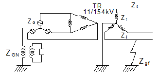
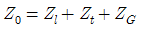
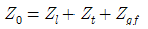
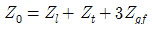
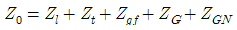
(정답률: 27%)
3과목: 전기기기
41. 정전압 계통에 접속된 동기발전기의 여자를 약하게 하면?
- 출력이 감소한다.
- 전압이 강하한다.
- 앞선 무효전류가 증가한다.
- 뒤진 무효전류가 증가한다.
(정답률: 20%)
42. 다이오드를 사용하는 정류회로에서 과대한 부하전류로 인하여 다이오드가 소손될 우려가 있을 때 가장 적절한 조치는 어느 것인가?
- 다이오드를 병렬로 추가한다.
- 다이오드를 직렬로 추가한다.
- 다이오드 양단에 적당한 값의 저항을 추가한다.
- 다이오드 양단에 적당한 값의 콘덴서를 추가한다.
(정답률: 30%)
43. 직류 발전기의 외부 특성곡선에서 나타내는 관계로 옳은 것은?
- 계자전류와 단자전압
- 계자전류와 부하전류
- 부하전류와 단자전압
- 부하전류와 유기기전력
(정답률: 24%)
44. 직류기의 전기자 반작용에 의한 영향이 아닌 것은?
- 자속이 감소하므로 유기기전력이 감소한다.
- 발전기의 경우 회전방향으로 기하학적 중성축이 형성된다.
- 전동기의 경우 회전방향과 반대방향으로 기하학적 중성축이 형성된다.
- 브러시에 의해 단락된 코일에는 기전력이 발생하므로 브러시 사이의 유기기전력이 증가한다.
(정답률: 26%)
45. 어떤 정류기의 부하 전압이 2000[V]이고 맥동률이 3[%]이면 교류분의 진폭[V]은?
- 20
- 30
- 50
- 60
(정답률: 29%)
46. 3상 3300[V], 100[kVA]의 동기발전기의 정격전류는 약 몇 [A]인가?
- 17.5
- 25
- 30.3
- 33.3
(정답률: 25%)
47. 4극 3상 유도전동기가 있다. 전원전압 200[V]로 전부하를 걸었을 때 전류는 21.5[A]이다. 이 전동기의 출력은 약 몇 [W]인가? 단, 전부하 역률 86[%], 효율 85[%]이다.
- 5029
- 5444
- 5820
- 6103
(정답률: 26%)
48. 변압비 3000/100[V]인 단상변압기 2대의 고압측을 그림과 같이 직렬로 3300[V] 전원에 연결하고, 저압측에 각각 5[Ω], 7[Ω]의 저항을 접속하였을 때, 고압측의 단자전압 E1은 약 몇 [V]인가?
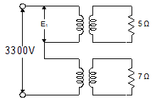
- 471
- 660
- 1375
- 1925
(정답률: 28%)
49. 교류기에서 유기기전력의 특징 고조파분을 제거하고 또 권선을 절약하기 위하여 자주 사용되는 권선법은?
- 전절권
- 분포권
- 집중권
- 단절권
(정답률: 24%)
50. 12극의 3상 동기발전기가 있다. 기계각 15°에 대응하는 전기각은?
- 30
- 45
- 60
- 90
(정답률: 24%)
51. 4극, 60[Hz]의 유도전동기가 슬립 5[%]로 전부하 운전 하고 있을 때 2차 권선의 손실이 94.25[W]라고 하면 토크는 약 몇 [Nㆍm]인가?
- 1.02
- 2.04
- 10.0
- 20.0
(정답률: 22%)
52. 단상 변압기에 정현파 유기기전력을 유기하기 위한 여자전류의 파형은?
- 정현파
- 삼각파
- 왜형파
- 구형파
(정답률: 22%)
53. 회전형전동기와 선형전동기(Linear Motor)를 비교한 설명 중 틀린 것은?
- 선형의 경우 회전형에 비해 공극의 크기가 작다.
- 선형의 경우 직접적으로 직선운동을 얻을 수 있다.
- 선형의 경우 회전형에 비해 부하관성의 영향이 크다.
- 선형의 경우 전원의 상 순서를 바꾸어 이동방향을 변경한다.
(정답률: 18%)
54. 변압기의 전일 효율이 최대가 되는 조건은?
- 하루 중의 무부하손의 합 = 하루중의 부하손의 합
- 하루 중의 무부하손의 합 < 하루 중의 부하손의 합
- 하루 중의 무부하손의 합 > 하루 중의 부하손의 합
- 하루 중의 무부하손의 합 = 2×하루 중의 부하손의 합
(정답률: 30%)
55. 유도전동기를 정격상태로 사용 중, 전압이 10[%] 상승하면 다음과 같은 특성의 변화가 있다. 틀린 것은? (단, 부하는 일정 토크라고 가정한다.) (문제 오류로 실제 시험에서는 나,다번이 정답처리 되었습니다. 여기서는 나번을 누르면 정답 처리 됩니다.)
- 슬립이 작아진다.
- 효율이 떨어진다.
- 속도가 감소한다.
- 히스테리시스손과 와류손이 증가한다.
(정답률: 28%)
56. 대칭 3상 권선에 평형 3상 교류가 흐르는 경우 회전자계의 설명으로 틀린 것은?
- 발생 회전 자계 방향 변경 가능
- 발전 회전 자계는 전류와 같은 주기
- 발생 회전 자계 속도는 동기 속도보다 늦음
- 발생 회전 자계 세기는 각 코일 최대 자계의 1.5배
(정답률: 24%)
57. 직류기 권선법에 대한 설명 중 틀린 것은?
- 단중 파권은 균압환이 필요하다.
- 단중 중권의 병렬회로 수는 극수와 같다.
- 저전류ㆍ고전압 출력은 파권이 유리하다.
- 단중 파권의 유기전압은 단중 중권의 P/2이다.
(정답률: 25%)
58. 스테핑 모터의 일반적인 특징으로 틀린 것은?
- 기동ㆍ정지 특성은 나쁘다.
- 회전각은 입력펄스 수에 비례한다.
- 회전속도는 입력펄스 주파수에 비례한다.
- 고속 응답이 좋고, 고출력의 운전이 가능하다.
(정답률: 27%)
59. 철손 1.6[kW] 전부하동손 2.4[kW]인 변압기에는 약 몇 [%] 부하에서 효율이 최대로 되는가?
- 82
- 95
- 97
- 100
(정답률: 27%)
60. 동기 발전기의 제동권선의 주요 작용은?
- 제동작용
- 난조방지작용
- 시동권선작용
- 자려작용(自勵作用)
(정답률: 32%)
4과목: 회로이론 및 제어공학
61. 제어오차가 검출될 때 오차가 변화하는 속도에 비례하여 조작량을 조절하는 동작으로 오차가 커지는 것을 사전에 방지하는 제어 동작은?
- 미분동작제어
- 비례동작제어
- 적분동작제어
- 온-오프(ON-OFF)제어
(정답률: 23%)
62. 다음과 같은 상태방정식으로 표현되는 제어계에 대한 설명으로 틀린 것은?
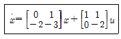
- 2차 제어계이다.
- x는 (2×1)의 벡터이다.
- 특성방정식은 (s+1)(s+2)=0이다.
- 제어계는 부족제동(under damped)된 상태에 있다.
(정답률: 24%)
63. 벡터 궤적이 다음과 같이 표시되는 요소는?
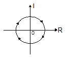
- 비례요소
- 1차 지연요소
- 2차 지연요소
- 부동작 시간요소
(정답률: 23%)
64. 그림과 같은 이산치계의 z변환 전달함수
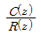
를 구하면? (단,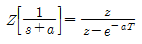
임)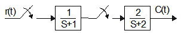
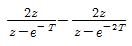
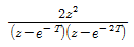
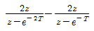
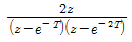
(정답률: 21%)
65. 다음의 논리 회로를 간단히 하면?
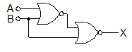
- X=AB
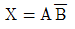
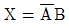
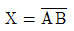
(정답률: 25%)
66. 그림과 같은 신호흐름 선도에서 C(s)/R(s)의 값은?
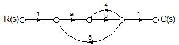
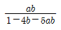
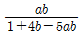
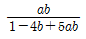
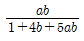
(정답률: 27%)
67. 단위계단 입력에 대한 응답특성이
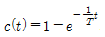
로 나타나는 제어계는?- 비례제어계
- 적분제어계
- 1차지연제어계
- 2차지연제어계
(정답률: 26%)
68.
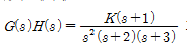
에서 근궤적의 수는?- 1
- 2
- 3
- 4
(정답률: 26%)
69. 주파수 응답에 의한 위치제어계의 설계에서 계통의 안정도 척도와 관계가 적은 것은?
- 공진치
- 위상여유
- 이득여유
- 고유주파수
(정답률: 21%)
70. 나이퀴스트(Nyquist) 선도에서의 임계점 (-1, j0)에 대응하는 보드선도에서의 이득과 위상은?
- 1 dB, 0°
- 0 dB, -90°
- 0 dB, 90°
- 0 dB, -180°
(정답률: 25%)
71. 평형 3상 △결선 회로에서 선간전압(El)과 상전압(Ep)의 관계로 옳은 것은?
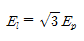
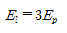
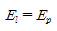
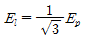
(정답률: 27%)
72. 정격전압에서 1[kW]의 전력을 소비하는 저항에 정격의 80[%] 전압을 가할 때의 전력[W]은?
- 320
- 540
- 640
- 860
(정답률: 29%)
73. 그림에서 t=0에서 스위치 S를 닫았다. 콘덴서에 충전된 초기전압 Vc0)가 1[V] 이었다면 전류 를 변환한 값 I(s)는?
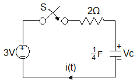
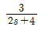
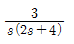
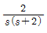
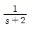
(정답률: 14%)
74. 그림과 같은 회로에서 ix는 몇 [A] 인가?
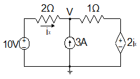
- 3.2
- 2.6
- 2.0
- 1.4
(정답률: 12%)
75. 그림과 같이 전압 V와 저항 R로 구성되는 회로 단자 A-B간에 적당한 저항 RL을 접속하여 RL에서 소비되는 전력을 최대로 하게 했다. 이 때 RL에서 소비되는 전력 P는?
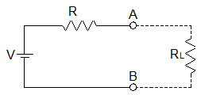
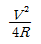
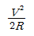
- R
- 2R
(정답률: 22%)
76. 다음의 T형 4단자망 회로에서 ABCD 파라미터 사이의 성질 중 성립되는 대칭조건은?
- A=D
- A=C
- B=C
- B=A
(정답률: 27%)
77. 분포정수 회로에서 선로의 특성임피던스를 Z0, 전파정수를 ϒ라 할 때 무한장 선로에 있어서 송전단에서 본 직렬임피던스는?
(정답률: 25%)
78. 그림의 RLC 직병렬회로를 등가 병렬회로로 바꿀 경우, 저항과 리액턴스는 각각 몇 [Ω]인가?
- 46.23, j87.67
- 46.23, j107.15
- 31.25, j87.67
- 31.25, j107.15
(정답률: 13%)
79. 일 때 f(t)의 정상값은?
- 5
- 3
- 1
- 0
(정답률: 29%)
80. 선간전압이 200[V], 선전류가 10√3[A], 부하역률이 80[%]인 평형 3상 회로의 무효전력[Var]은?
- 3600
- 3000
- 2400
- 1800
(정답률: 25%)
5과목: 전기설비기술기준 및 판단기준
81. 동일 지지물에 고압 가공전선과 저압 가공전선을 병가할 경우 일반적으로 양 전선간의 이격거리는 몇 [㎝]이상인가?
- 50
- 60
- 70
- 80
(정답률: 21%)
82. 전압의 종별에서 교류 600[V]는 무엇으로 분류하는가?(관련 규정 개정전 문제로 여기서는 기존 정답인 1번을 누르면 정답 처리됩니다. 자세한 내용은 해설을 참고하세요.)
- 저압
- 고압
- 특고압
- 초고압
(정답률: 27%)
83. 전로에 시설하는 고압용 기계기구의 철대 및 금속제 외함에는 제 몇 종 접지공사를 하여야 하는가?(오류 신고가 접수된 문제입니다. 반드시 정답과 해설을 확인하시기 바랍니다.)
- 제1종 접지공사
- 제2종 접지공사
- 제3종 접지공사
- 특별 제3종 접지공사
(정답률: 15%)
84. 저압 옥상전선로의 시설에 대한 설명으로 틀린 것은?
- 전선은 절연전선을 사용한다.
- 전선은 지름 2.6㎜ 이상의 경동선을 사용한다.
- 전선과 옥상전선로를 시설하는 조영재와의 이격거리를 0.5[m]로 한다.
- 전선은 상시 부는 바람 등에 의하여 식물에 접촉하지 않도록 시설한다.
(정답률: 28%)
85. 저압 및 고압 가공전선의 높이에 대한 기준으로 틀린 것은?
- 철도를 횡단하는 경우는 레일면상 6.5[m] 이상이다.
- 횡당 보도교 위에 시설하는 저압의 경우는 그 노면 상에서 3[m] 이상이다.
- 횡단 보도교 위에 시설하는 고압의 경우는 그 노면 상에서 3.5[m] 이상이다.
- 다리의 하부 기타 이와 유사한 장소에 시설하는 저압의 전기철도용 급전선은 지표상 3.5[m]까지로 감할 수 있다.
(정답률: 23%)
86. 35[kV] 기계기구, 모선 등을 옥외에 시설하는 변전소의 구내에 취급자 이외의 사람이 들어가지 않도록 울타리를 시설하는 경우에 울타리의 높이와 울타리로부터의 충전부분까지의 거리의 합계는 몇 [m]인가?
- 5
- 6
- 7
- 8
(정답률: 18%)
87. 최대사용전압이 22,900[V]인 3상4선식 중성선 다중접지식 전로와 대지 사이의 절연내력 시험전압은 몇 [V]인가?
- 21,068
- 25,229
- 28,752
- 32,510
(정답률: 31%)
88. 터널 등에 시설하는 사용전압이 220[V]인 저압의 전구선으로 편조 고무코드를 사용하는 경우 단면적은 몇 [mm2] 이상인가?
- 0.5
- 0.75
- 1.0
- 1.25
(정답률: 29%)
89. 고압 가공전선과 건조물의 상부 조영재와의 옆쪽 이격거리는 몇 [m] 이상인가? 단, 전선에 사람이 쉽게 접촉할 우려가 있고 케이블이 아닌 경우이다.
- 1.0
- 1.2
- 1.5
- 2.0
(정답률: 22%)
90. 특고압용 제2종 보안장치 또는 이에 준하는 보안장치 등이 되어 있지 않은 25[kV] 이하인 특고압 가공 전선로의 지지물에 시설하는 통신선 또는 이에 직접 접속하는 통신선으로 사용 할 수 있는 것은?
- 광섬유 케이블
- CN/CV 케이블
- 캡타이어 케이블
- 지름 2.6[㎜] 이상의 절연전선
(정답률: 22%)
91. 765[kV] 가공전선 시설 시 2차 접근상태에서 건조물을 시설하는 경우 건조물 상부와 가공전선 사이의 수직거리는 몇 [m] 이상인가? (단, 전선의 높이가 최저상태로 사람이 올라갈 우려가 있는 개소를 말한다.)
- 15
- 20
- 25
- 28
(정답률: 20%)
92. 정격전류 20[A]와 40[A]인 전동기와 정격전류 10[A]인 전열기 5대에 전기를 공급하는 단상 220[V] 저압 옥내간선이 있다. 몇 [A] 이상의 허용전류가 있는 전선을 사용하여야 하는가?(오류 신고가 접수된 문제입니다. 반드시 정답과 해설을 확인하시기 바랍니다.)
- 100
- 116
- 125
- 132
(정답률: 22%)
93. 의료 장소에서 인접하는 의료장소와의 바닥면적 합계가 몇 [m2] 이하인 경우 기준접지바를 공용으로 할 수 있는가?
- 30
- 50
- 80
- 100
(정답률: 19%)
94. 배선공사 중 전선이 반드시 절연전선이 아니라도 상관없는 공사방법은?
- 금속관 공사
- 합성수지관 공사
- 버스덕트 공사
- 플로어 덕트 공사
(정답률: 20%)
95. 폭발성 또는 연소성의 가스가 침입할 우려가 있는 것에 시설하는 지중전선로의 지중함은 그 크기가 최소 몇 [m3] 이상인 경우에는 통풍장치 기타 가스를 방산 시키기 위한 적당한 장치를 시설하여야 하는가?
- 1
- 3
- 5
- 10
(정답률: 32%)
96. 사용 전압이 특고압인 전기집진장치에 전원을 공급하기 위해 케이블을 사람이 접촉할 우려가 없도록 시설 하는 경우 케이블의 피복에 사용하는 금속체는 몇 종 접지 공사로 할 수 있는가?(오류 신고가 접수된 문제입니다. 반드시 정답과 해설을 확인하시기 바랍니다.)
- 제1종 접지공사
- 제2종 접지공사
- 제3종 접지공사
- 특별 제3종 접지공사
(정답률: 20%)
97. 가공 전선로의 지지물에 시설하는 지선의 안전율은 일반적인 경우 얼마 이상이어야 하는가?
- 2.0
- 2.2
- 2.5
- 2.7
(정답률: 25%)
98. 고ㆍ저압 혼촉에 의한 위험을 방지하려고 시행하는 제2종 접지공사에 대한 기준으로 틀린 것은?
- 제2종 접지공사는 변압기의 시설장소마다 시행하여야 한다.
- 토지의 상황에 의하여 접지저항값을 얻기 어려운 경우, 가공 접지선을 사용하여 접지극을 100[m]까지 떼어 놓을 수 있다.
- 가공 공동지선을 설치하여 접지공사를 하는 경우, 각 변압기를 중심으로 지름 400[m] 이내의 지역에 접지를 하여야 한다.
- 저압 전로의 사용전압이 300[V] 이하인 경우, 그 접지공사를 중성점에 하기 어려우면 저압측의 1단자에 시행할 수 있다.
(정답률: 18%)
99. 저압 가공전선로의 지지물에 시설하는 통신선 또는 이에 접속하는 가공 통신선이 도로를 횡단하는 경우, 일반적으로 지표상 몇 [m] 이상의 높이로 시설하여야 하는가?
- 6.0
- 4.0
- 5.0
- 3.0
(정답률: 21%)
100. 사용전압이 22.9[kV]인 특고압 가공전선이 도로를 횡단하는 경우, 지표상 높이는 최소 몇 [m] 이상인가?
- 4.5
- 5
- 5.5
- 6
(정답률: 26%)